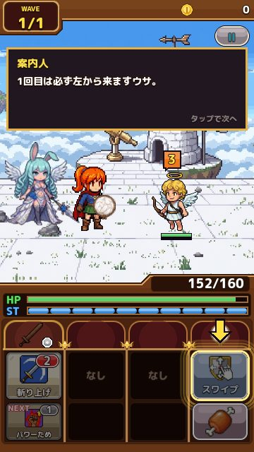
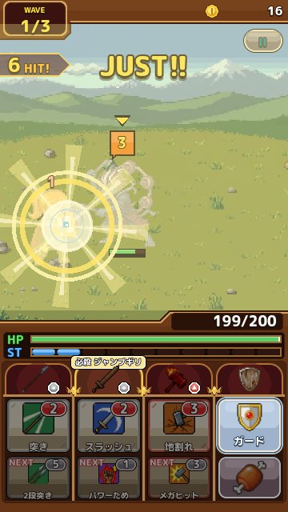

天空編とスワイプガード：指をはなさず向きをつなぐ
天空の世界の入り方と、指を置いたまま向きをつなぐ「スワイプガード」の決まり・判定・盾をまとめました。 更新：2026-11-23
天空の世界へ入るには
天空編は、海底の旅を終えたあとに始まる世界です。海底のエンディングを見てからゲームを再開すると王さまとの話があり、そのあと地上の地図の飛空船のそばに「天からの陽射し」が降りてきます。陽射しをタップすると天空の世界へ移り、拠点の「気象観測所」に着きます。陽射しは一度降りたあとはずっと出たままなので、地上と天空はいつでも行き来できます。天空から地上へもどるときは、天空の地図の「雲間」を使います。
はじめて気象観測所に入ると、スワイプガードのチュートリアルが始まります。地上の盾のままでは天空の敵の攻撃を防げないので、案内役が天空用の盾「羽毛の盾」を渡してくれます。チュートリアルを終えると、最初のエリア「雲海の小道」へ進めます。気象観測所には盾の店とガチャがあり、チュートリアルは何度でも遊び直せます。チュートリアルのあとは、ガードの練習相手「ソラカカシ」も選べるようになります。

天空では「天空の盾」が必要
天空の敵の攻撃を防げるのは、スキルが「スワイプガード」になっている天空の盾だけです。地上・地底・海底の盾を付けたまま天空へ出かけると、ガードができないうえ、盾の DEF・HP・効果も入りません。盾の HP は主人公の最大 HP に足される分なので、世界に合わない盾では最大 HP まで下がってしまいます。
反対に、天空の盾はほかの世界では使えません。いくつもの世界を行き来するなら、装備を世界ごとにまとめておくと、付けかえ忘れを防げます。
スワイプガードの基本
天空の敵の攻撃は、いつも 2 回以上続く連続攻撃です。そして、どの攻撃も 1 回目はかならず左から来ます。天空のガードは、この連続攻撃を「1 回の指の動き」として受け止める仕組みです。
- 1 回目（←）：「!!」のあと、← の吹き出しの攻撃が当たる直前に、ガードボタンの上で指を左へスワイプします。タップでは受けられません。かならず左へはじきます
- 指を置いたまま待つ：左へスワイプしたら、指は画面から離さずにそのまま置いておきます。指を離してはいけないあいだは、背景が少し暗くなります
- 2 回目（オレンジの吹き出し）：2 回目からは吹き出しの色がオレンジに変わり、→・↑・↓ のどれかの矢印が出ます。当たる直前に、置いたままの指をその向きへフリックします
- 3 回目から：← → ↑ ↓ のどれかが来ます。ただし、すぐ前と同じ向きが続くことはありません。前の向きと違う矢印が来る、と思って待つと読みやすくなります
途中で指を離すと、その攻撃の残りの発は、もうフリックしても受けられません。1 回目を左で受けたあとは、攻撃が全部終わるまで指を置きつづけるのがいちばん大切な決まりです。
フリックのタイミング
1 発ごとのタイミングの見方は、地上のガードと同じです。フリックした時が、当たる瞬間にどれだけ近いかで決まります。
| 難易度 | ミラクル | ジャスト | ガード |
|---|---|---|---|
| イージー | 5 フレーム以内 | 12 フレーム以内 | 35 フレーム以内 |
| ノーマル | 4 フレーム以内 | 10 フレーム以内 | 30 フレーム以内 |
| ハード | 3 フレーム以内 | 8 フレーム以内 | 25 フレーム以内 |
| エクストラ | 2 フレーム以内 | 6 フレーム以内 | 20 フレーム以内 |
| ルナティック | 1 フレーム（ちょうど） | 4 フレーム以内 | 15 フレーム以内 |
数字は「当たる瞬間の何フレーム前までにフリックすればよいか」で、1 秒 = 60 フレームです。表の数より早くフリックすると、構えが終わってしまって受けられません。向きをまちがえたときも、タイミングに関係なく受けられません。
2 回目からは速くなる
2 回目からの攻撃は、1 回目より間をつめて来ます。前の発が当たってから次の発が当たるまでは、1 回目の「!!」から当たるまでの 4 分の 3 ほどです。1 回目と同じリズムで待っていると遅れるので、「1 回目より少し早く次が来る」と体に覚えさせましょう。特殊攻撃の「風迅」のときは、さらに速くなります（下で説明します）。

連続攻撃の判定のしかた
天空の連続攻撃は、1 発ずつ結果の文字を出しません。途中の発を受けたときは、盾の前に小さな光が出て、その発のタイミングを色で知らせます。金色ならミラクルのタイミング、水色ならジャスト、青ならふつうのガードです。「ガード」「ジャスト」「ミラクル」の文字が出るのは、最後の発を受けたときだけです。
最後に出る結果は、次の決まりで決まります（2026 年 11 月 23 日からの決まりです）。
- ミラクル：途中の発が全部ジャスト以上で、最後の発がミラクルのタイミング
- ジャスト：全部の発がジャスト以上（ミラクルの条件に届かないとき）
- ガード：どこかにふつうのガードの発がある。または、途中に受けそこねた発があって、最後の発は受けられた
| 1 回目 | 2 回目 | 3 回目（最後） | 最後に出る結果 |
|---|---|---|---|
| ジャスト | ジャスト | ミラクル | ミラクル |
| ミラクル | ジャスト | ジャスト | ジャスト |
| ジャスト | ガード | ミラクル | ガード |
| 受けそこねた | ジャスト | ミラクル | ガード |
前は、全部の発をミラクルのタイミングに入れないとミラクルにならず、発の多い攻撃ではほとんど出せませんでした。今は、途中の発は「ジャスト以上」でよく、最後の 1 発だけをぴたりと合わせればミラクルになります。途中の発はジャストを確実に取り、最後の発に集中する、というのが天空でミラクルをねらうコツです。
ダメージは 1 発ずつ、その発の本当のタイミングで減ります。途中の発をミラクルのタイミングで受ければその発のダメージは 0、ジャストならジャストの減り方です。いっぽう、ST の回復とミラクルの HP の回復は、最後の結果のときにまとめて入ります。

⚡（感電）の受け方
雷雲や電気クラゲ、雷に関わるボスなどは、連続攻撃の 2 回目以降のどこかで、黄色い ⚡ の吹き出しを出すことがあります。これが特殊攻撃の「感電」で、⚡ の発でその攻撃は終わります。⚡ は向きでは受けられません。画面をたたいて受け止めます。
- それまでの発をフリックした指を置いたまま、⚡ が当たるのを待ちます。指を置いていれば、⚡ を盾で受け止めます
- 受け止めているあいだ（約 1.5 秒）に、画面のどこでもいいので何度もたたきます
- 6 回でガード、9 回でジャスト、12 回でミラクルです。12 回に届くと、その場で受け止め終わります
たたいた回数は、前の発が当たった時から数えはじめます。⚡ の吹き出しが見えたら、当たるのを待たずにたたき始めて大丈夫です。指を離してしまっていても、⚡ が当たってすぐ（約 0.25 秒以内）にたたけば、そこから受け止められます。⚡ は連続攻撃の最後の発なので、⚡ を 12 回たたいてミラクルにし、それまでの発が全部ジャスト以上なら、攻撃全体がミラクルになります。
天空の特殊攻撃
| 名前 | 主に使う敵 | どうなるか | 対策 |
|---|---|---|---|
| 風迅 | ハーピィ、グリフォン、ハネウサギのなかまと、速い鳥や風のボス | 青い「!!」のあと、2 回目からの間隔がとても短くなる | 左で受けたら、矢印を見た瞬間にフリック |
| 感電 | カミナリグモ、ソラクラゲのなかまと、雷のボス | 2 回目以降に ⚡ が出て、その発で攻撃が終わる | 指を置いたまま受け止め、何度もたたく |
| 祝福 | エンジェルのなかま（テンシ） | 天使が攻撃したあと、天使がいるあいだ、ほかの敵の受けるダメージが半分になる | 天使を先に倒すか、スタンさせる |
風迅
風迅の攻撃は、吹き出しが青い「!!」になるのが合図です。2 回目からの間隔が、ふつうの天空の攻撃よりさらに短く、1 回目の「!!」から当たるまでの半分ほどになります。チュートリアルでも最後の練習が風迅です。間が短いぶん、矢印を「読んでから考える」時間はありません。左で受けたら、指を軽く構えたまま、矢印が見えたらすぐはじく、という反射の勝負です。
祝福
祝福は、天使のなかまの攻撃のあとにかかります。祝福を受けた敵（天使自身はのぞく）は、こちらの攻撃のダメージが半分になってしまいます。祝福は、天使が倒れるか、天使がスタンしているあいだは働きません。天使の混じった WAVE では、まず天使をねらうのが近道です。天使はテンシの種族で、どれも剣が弱点です。
よくある失敗と直し方
- 1 回目をタップしてしまう：天空ではタップでは受けられません。1 回目もかならず左へスワイプします
- 受けたあとに指を離す：残りの発が全部当たってしまいます。背景が暗いあいだは指を置きつづけます
- 2 回目が早すぎる・遅すぎる：2 回目からは 1 回目より間が短くなります。1 回目のリズムで待つと遅れがちです
- 前と同じ向きにはじく：天空では同じ向きが 2 回続きません。前の向きとは違う矢印をよく見ます
- ⚡ で指を止めてしまう：⚡ はフリックでなく、たたく回数で決まります。吹き出しが黄色になったら、すぐたたき始めます
- フリックが大きすぎる：指を大きく動かすと、次の向きへ指を戻すのが間に合わなくなります。ガードボタンの上で短くはじき、指はボタンの近くに置いておきます
練習のしかた
気象観測所のチュートリアルは、次の 4 つの練習でできています。どれもガードできるまでやり直せます（7 回でできなくても次へ進みます）。
- ← → の 2 回：左で受けてから、指を置いたまま右へ
- ← ↓ の 2 回：2 回目の向きが変わる練習
- ← ↑ のあとに ⚡：指を置いたまま受け止めて、何度もたたく
- 風迅の ← → ↑：青い「!!」のあと、速い 2 回目・3 回目をつなぐ
チュートリアルのあとに選べる「ソラカカシ（ガードの練習）」は、毎ターン攻撃してくる練習相手です。主人公は倒れないので、自分の装備で何度でも連続攻撃の受け方を試せます。最後の発だけミラクルを合わせる練習や、2 回目の速さに慣れる練習にぴったりです。それでも合わないときは、「設定」のガードの補正と、難易度 を見直してください。

天空の盾
天空の盾は、気象観測所・風車の浮島・天空都市の店で買えるほか、宝箱やガチャでも手に入ります。店で買える盾は次のとおりです。
| 盾 | 店 | レア度 | DEF | HP | 効果 |
|---|---|---|---|---|---|
| 雲綿の盾 | 気象観測所 | N | 2 | 70 | 猶予：受付の長さ +20% |
| 風見鶏の盾 | 気象観測所 | N | 1 | 80 | 先詠み：攻撃の向きが早く見える |
| ハーピーの羽盾 | 風車の浮島 | R | 3 | 120 | 必殺の守り：必殺技で受けるダメージ −30% |
| 天使の小盾 | 風車の浮島 | R | 3 | 130 | 受け身：ガードできなかった攻撃のダメージ −30% |
| 風車の羽盾 | 風車の浮島 | R | 4 | 110 | 猶予：受付の長さ +20% |
| 天馬の蹄鉄盾 | 風車の浮島 | R | 3 | 140 | 避雷：感電が出ない |
| 雷雲の盾 | 天空都市 | SR | 5 | 180 | 凪：風迅が出ない |
| 虹の盾 | 天空都市 | SR | 5 | 190 | 破魔：祝福が出ない |
| 天使の羽衣盾 | 天空都市 | SR | 4 | 190 | 天使の羽衣：HP が 0 になる攻撃を STAGE ごとに 1 回耐える |
| 琥珀の盾 | 天空都市 | SR | 5 | 170 | 絶縁：感電の稲妻で受けるダメージを 0 にする |
| 宵空の盾 | 天空都市 | SR | 5 | 200 | 上昇気流：攻撃を全部ガードすると ST +1 |
特殊攻撃を「出させない」盾
天空の盾には、特定の特殊攻撃そのものを出させない効果があります。避雷なら感電、凪なら風迅、破魔なら祝福が、その盾を付けているあいだは出ません。ボスが必殺技のたびに使う特殊攻撃も、盾で止めればふつうの必殺技になります。たとえば、風迅を使うボスに凪の盾で挑めば、必殺技の 2 回目からの速さがふつうの天空の攻撃と同じになります。行き先のエリアの敵がどの特殊攻撃を使うかは、天空の攻略 前半・後半 の表を見て決めてください。
そのほかの効果の選び方
- フリックがいつも早すぎる：猶予（雲綿の盾・風車の羽盾）。受付が長くなり、早めのフリックでもガードになりやすくなります
- 矢印を読むのが間に合わない：先詠み（風見鶏の盾）。向きが早く見えるぶん、考える時間がふえます
- ボスの必殺技が痛い：必殺の守り（ハーピーの羽盾）。必殺技のダメージを減らします
- 途中で受けそこねることが多い：受け身（天使の小盾）。受けそこねた発のダメージを減らします
- ジャスト以上がそろってきた：上昇気流（宵空の盾）。攻撃を全部ガードするたび ST がふえ、スキルを回しやすくなります
上のレア度の盾には、向きをまちがえても一定の確率でガードになる「風読み」などの効果もあります。天空の素材は、雑魚とボスが落とす「雲のかけら」と、ボスが落とす「天空石」が基本です。強化と進化は 鍛冶屋の使い方 を見てください。
天空のエリアの攻略
天空の各エリアの敵と弱点、中ボスとボスの戦い方、初回クリアの品は、次の 2 つの記事にまとめています。